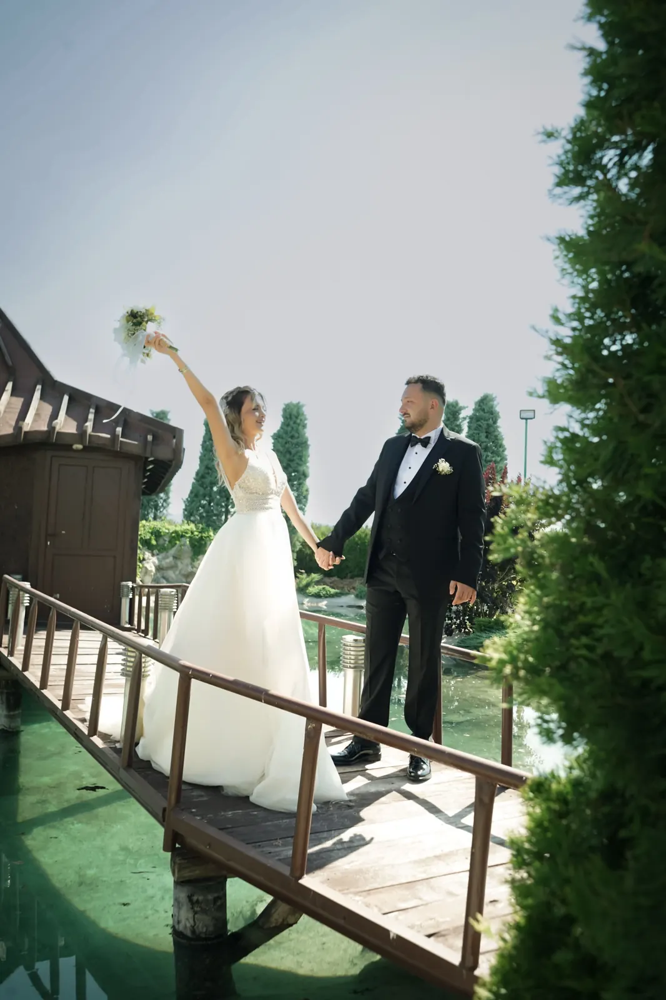

Hello, I'm Amara
Photographer, slow traveller and firm believer that the best photographs happen when nobody is posing.

I picked up my mother's film camera at fifteen and photographed my cousin's wedding at nineteen, mostly because the hired photographer did not show up.
Ten years and more than two hundred weddings later, the job is still the same. Notice what matters to you, stay out of the way, and make sure nothing important slips past.
I am based in Cape Town with my partner Jonah, who films weddings and makes excellent coffee. When I am not at a wedding I am usually editing by a window, swimming at Clifton or planning the next trip.

From hello to your gallery

Say hello
Send your date and plans through the enquiry form. I reply within two working days with availability and a full brochure.
We talk
A relaxed video call to get to know each other and talk through your day, your venue and what matters most.
Plan together
A month before the wedding we build a simple timeline, a family photo list and a plan for the light.
The day and after
I arrive early and stay late. A sneak peek lands within a week and your full gallery follows within six.

"Can hates cameras. Somehow Amara got him laughing within five minutes, and those photos are now on every wall in our flat."Elif & Can, Bursa